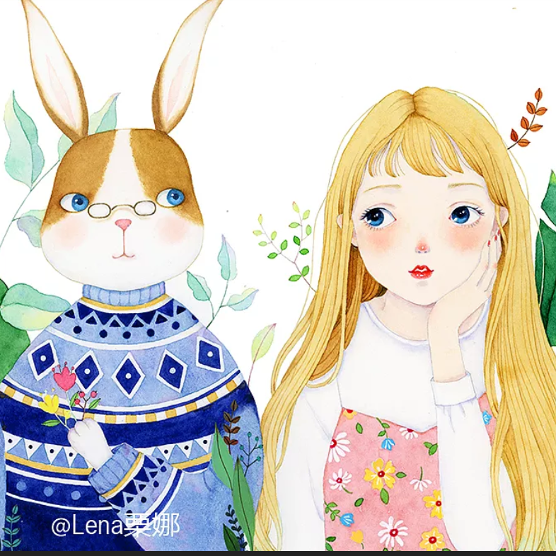
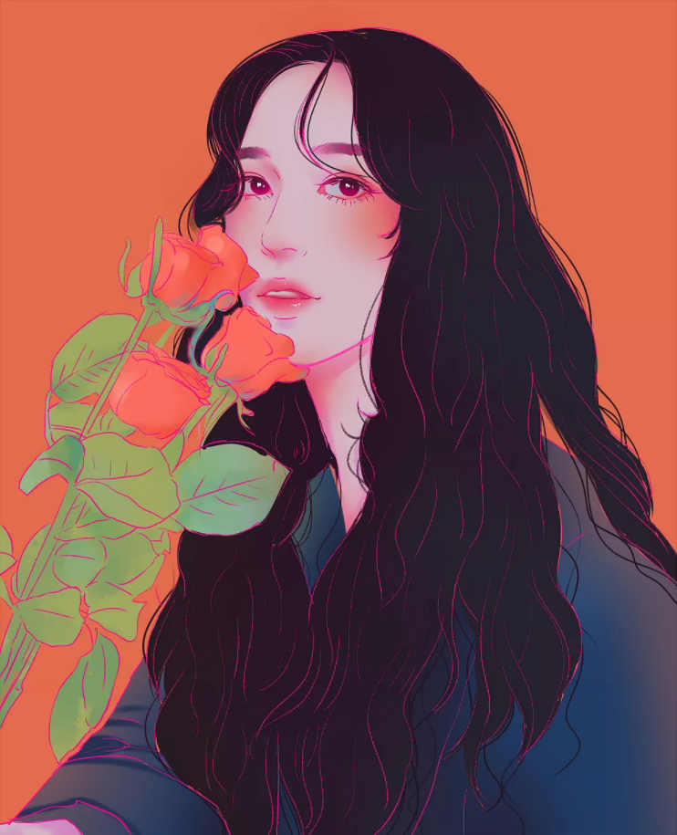

背景：
outline属性设置。style,color,width;outline-offset:像素值（相对元素的边框而言的距离），负值时在元素内。
background-origin: content-box; background-position:bottom right ，不设置position默认为0，0，设置了其中一个position默认为center，background-origin定义的是背景位置（background-position）的起始点；而background-clip是对背景（图片和背景色）的切割
box-shadow （会沿用box的圆角） 和outline （不会沿用box的圆角）组合起来
linear-gradient (#F6FC80 25%,#7ED9DE 0,#7ED9DE 50%,#F6FC80 0,#F6FC80 75%,#7ED9DE 0)修改角度45deg以及四条颜色可以得到斜条纹
repeating-linear-gradient （基于整个box的重复）,两个颜色就可以得到斜条纹。
基于同一色调的渐变，background-color设置底色，repeat-linear-gradient设置重复的不同透明白色的渐变
基于同色系的棋盘背景：
基于同色系的棋盘背景2：
背景图，两张背景图叠加，形成的图片背景边框，前面的图片背景origin为border-box后面的为content-box
border的背景图片和content的背景图片是分开渲染的。添加background-origin: border-box;
信封边框1、1em的padding宽度，backgroun-image两个图片背景叠加，内部为linear-gradient两个白色的渐变。前面的图片背景origin为content-box后面的为padding-box
信奉边框2、1em的border宽度，backgroun-image两个图片背景叠加，内部为linear-gradient两个白色的渐变。前面的图片背景origin为border-box后面的为content-box
蚂蚁动态边框：
脚注，利用tranarent不展示后边的背景色。
脚注
形状：
当任意两个相邻圆角的半径之和超过 border box 的尺寸时， 用户
代理必须按比例减小各个边框半径所使用的值， 直到它们不会相互重叠
为止。
border-radius， 有一个鲜为人知的真相： 它可以单独指定水平
和垂直半径， 只要用一个斜杠（/） 分隔这两个值即可。
它不仅可以接受长度值， 还可以接受百分比值。 这个
百分比值会基于元素的尺寸进行解析
- border-top-left-radius
- border-top-right-radius
- border-bottom-right-radius
- border-bottom-left-radius
为所有四个角提供完全不同的水平和垂直半径，
圆：width:0,height:0;border宽度一致；正方形且每个角的的半径都一样且大于50%
半圆/半椭圆：对称的图形,其中两个角的radius为0，其他两个的半径为50% 100%，50%为相邻拼接的那个半径，半圆适当增大拼接半径的border大小为另外一个的2倍。
4分之一圆，其中一个角占100% 100%。其他角水平和垂直都为0
平行四边形作为背景，且字不会扭曲。用伪类元素做平行四边形背景，z-index:-1.transform:skew(-50deg)
平行四边形
菱形图片头像 正方形图片和框，img放大1.42倍 rotate 旋转 scale 缩放

菱形图片头像 clip-path: polygon(0 50%, 50% 100%, 100% 50%,50% 0 )

切角效果 利用渐变来实现 切除多个角，多层级渐变叠加，更改渐变size
多层线性渐变叠加，更改渐变角度，和size,position
多层径向渐变叠加，更改渐变角度，和size,position
用伪类做花边。用径向渐变做花边，规定圆心起始位置为at top,ellise,横向半径和竖向半径。
唱片，伪类元素做中间的芯，用repeating-radial-gradient做波纹，叠加两个阴影，渐变排在前面的表现在最上层。控制渐变的角度和size制造阴影
渐变图层的具体情况如下：
border-image:url(images/q8.png) 33%/60px /60px round,chrome需要加上前缀-webkit-。
svg配合背景图：svg切角背景图,svg坐标3px X 3px 便于用1切割分成3分。，background指定background-color,且background-clip:padding-box,避免遮挡住svg的切角。
svg 圆角配合背景图：border-image :srouce clip width out-offset repeat border-image也是边框的一个属性，但是一旦这个属性无法显示才会显示border的默认样式,border-radius将会无效
clip-path：任意形状：